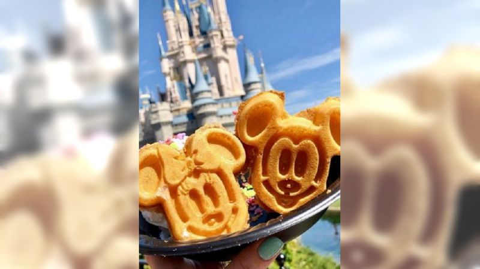

美國迪士尼樂園有不少部落客推薦必吃美食，像是米奇造型鬆餅和甜甜圈， 另外份量十足的煙燻火雞腿和平民甜點吉拿棒，也都是人氣餐點，遊園時別忘了親自探索品嚐。 一踏進迪士尼樂園，到處充滿歡樂氣氛，除了暢玩遊樂設施，樂園裡的美食同樣不能錯過。 記者：「米奇造型的食物，在樂園裡非常受歡迎，因為很適合拍照，讓一切變得更有趣。」 米奇巧克力棒、米奇蝴蝶餅，有不少料理都是用米老鼠的造型製成。

首頁 第二頁 第四頁 心得